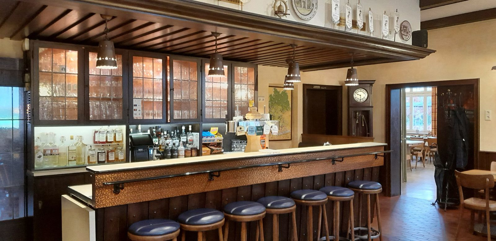
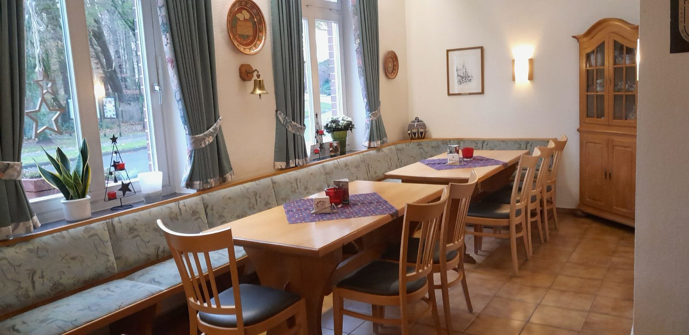
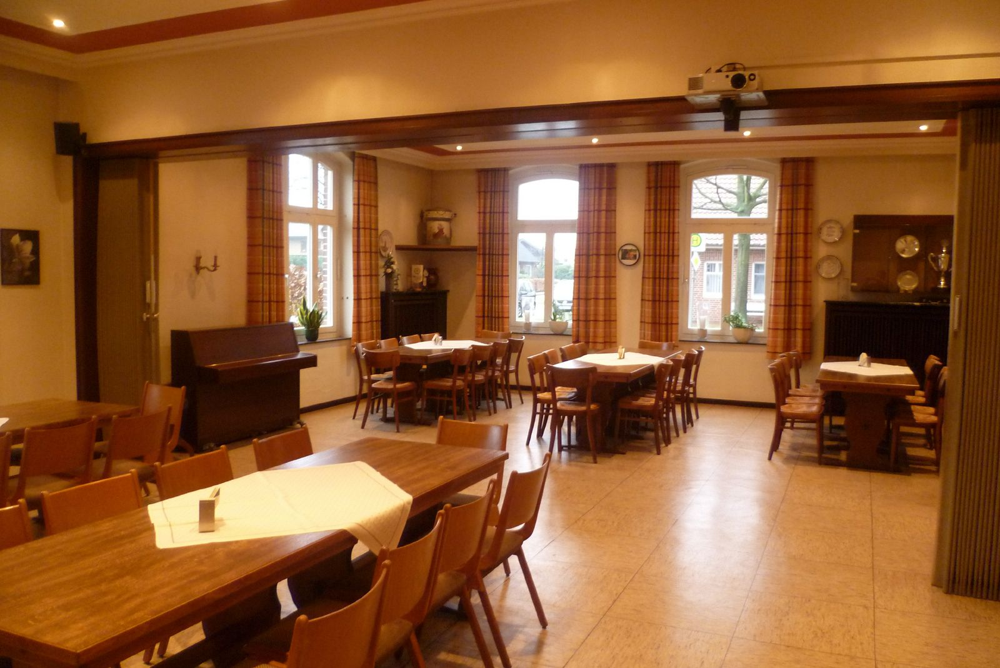
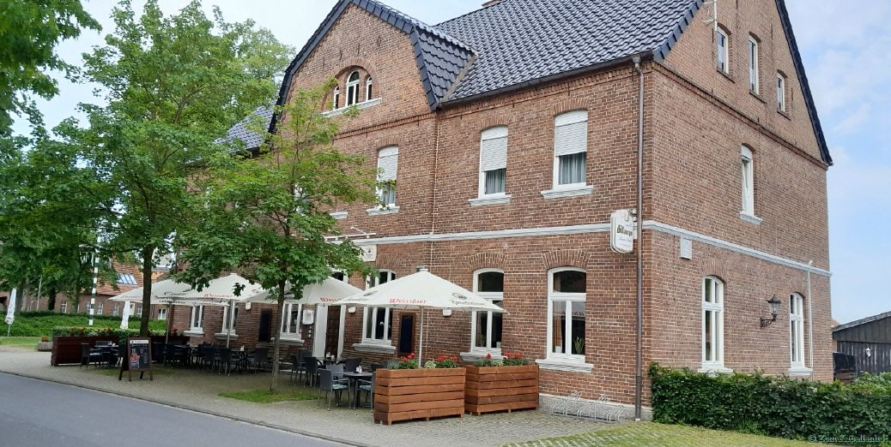
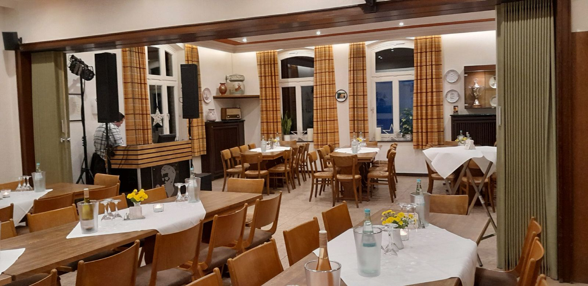
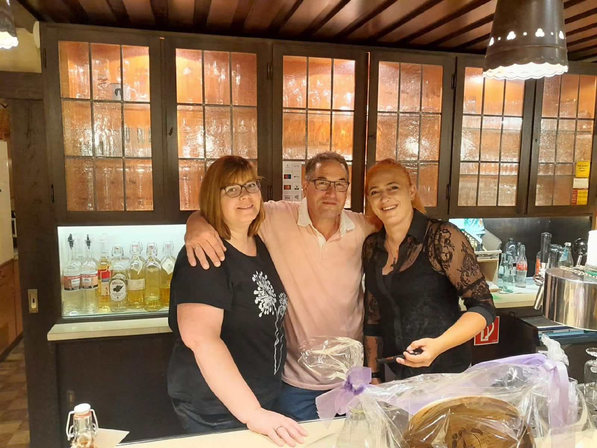
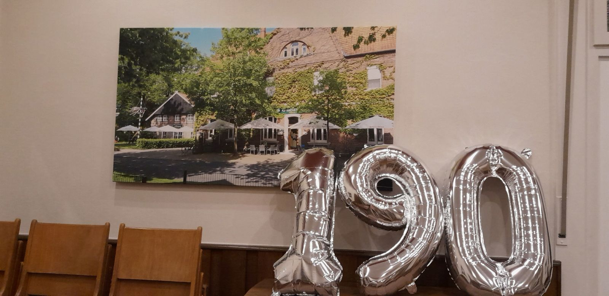
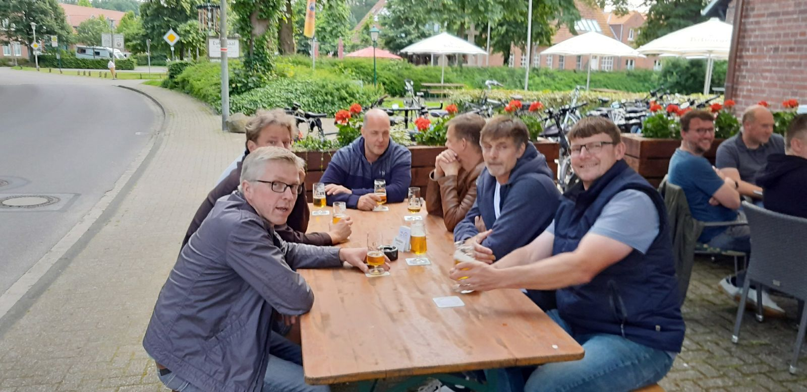

Die Schankwirtschaft
Theke, Stammtische und Frühschoppen am Sonntag. Hier wird seit Generationen ausgeschenkt.
Gaststätte seit 1834 · Welbergen
Alte Schankwirtschaft mit Gastzimmer, Saal und Terrasse. Ein Treffpunkt für Jung und Alt, mitten im Dorf.
Öffnungszeiten
Fr 19 bis ca. 1 Uhr
Sa ab 16 Uhr (Winter ab 18 Uhr)
So Frühschoppen ab 10 Uhr
Unser Haus
Ein Treffpunkt für Jung und Alt, wo es durchaus auch schon mal etwas lauter und unruhiger zugehen darf.

Theke, Stammtische und Frühschoppen am Sonntag. Hier wird seit Generationen ausgeschenkt.

12 bis 16 Personen
Ideal für kleine Gruppen.

bis zu 70 Personen
Für Gruppen, Vereine und Feiern.

Bei erträglicher Musik sind im Sommer lange Sommernächte nicht ausgeschlossen.
Gruppen und Vereine
Geburtstag, Vereinsabend oder Familienfeier, gern auch außerhalb der Öffnungszeiten nach Absprache. Sagen Sie uns kurz, was Sie vorhaben, den Rest besprechen wir persönlich.

So käme Ihre Anfrage bei Familie Meier an
Im Entwurf wird nichts verschickt. In der fertigen Seite öffnet sich WhatsApp oder Ihr Mailprogramm mit diesem Text, Sie tippen nur noch auf Senden.
Unsere Geschichte
Am 12. Juni 1834 gab die Königliche Regierung ihr „Ja-Wort“ zur Eröffnung einer Gaststätte in Welbergen. Die Originalurkunde ist heute noch vorhanden, schwarz auf weiß.
Der „Zeller“ Bernhard Heinrich Kappelhoff, geboren am 8. September 1812, erhält die Konzession zur Führung einer Schankwirtschaft. Aus dem Landwirt wird ein Land- und Gastwirt.
Tochter Katharina heiratet Bernhard Heinrich Lastering. Daher der Doppelname, der bis heute gebräuchlich ist.
Es entsteht das Haus, in dem die Gaststätte bis heute untergebracht ist.
Nach dem frühen Tod von Bernhard halten die Witwe Karoline mit 8 Söhnen und Tante Katharina den Betrieb. Katharina macht die Gaststätte zum Treffpunkt für Jung und Alt.
An der Stelle des alten Gebäudes entsteht der schmucke Fachwerkbau, bis 1995 ein Stall, heute der Saal.
Nach dem Umbau übernimmt Tochter Agnes mit Ehemann Josef Meier. Mit Günter, Karin und Robert bewirtschaften sie Gaststätte und Hof bis 1997.
Seit dem 1. Oktober 1997 führt Günter Meier das Haus, seit 2003 zusammen mit seiner Frau Nadine.
Im Juli 2024 feiert der Kapellenhof sein 190-jähriges Jubiläum. Aus Trinkgeldern von Stammgästen und Geschäftspartnern werden 2.500 Euro für die Kinderkrebshilfe Münster.



So finden Sie uns
Mit der Bahn bis Ochtrup (Münster–Gronau–Enschede), von dort mit dem Taxi.
Sommer 1. Mai bis 1. November
Winter 1. November bis 1. Mai
Montag bis Donnerstag geschlossen. Letzter Samstag im Monat geschlossen. Für Gruppen und Vereine auch nach Absprache.